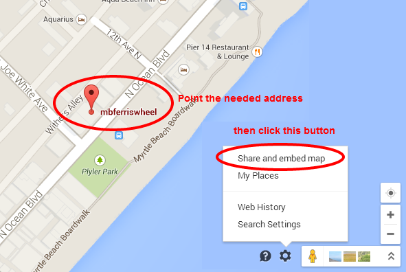
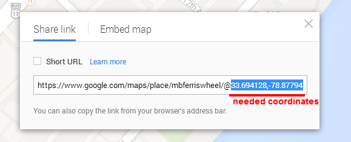

Thank you for choosing our template. If you have any questions that are beyond the scope of this file, please feel free to contact us.
Please note: for questions on basic HTML, JavaScript or CSS editing - please give your question to Google or visit W3Schools. You will need some HTML/CSS knowledge to edit this template.
Splashes has a fixed layout with up to 5 columns. All the information within the main content area is nested within a div. The general template structure is the same throughout the template as it uses the custom 12 column framework.
If you would like to edit the color, font or style of any element on the site please find the element's class or ID and locate where it is being controlled in main.css.
If you find that your new style is not overriding, it is most likely because of a specificity problem. Scroll down in your CSS file and make sure that there isn't a similar style that has more weight.
We're using the following CSS files in this template. Those files also contain some general styling, such as anchor tag colors, font-sizes, etc. Keep in mind that these values might be overridden somewhere else in the files below:
At first glance, the CSS may look confusing, let me explain each below:
Main CSS Files
main.css file contains specific stylings for the page. The file is separated into sections using:
-- GENERAL -- reset -- defaults -- headings -- buttons -- CONTENT PAGE -- sticky menu -- mobile menu -- about us -- contact -- subscribe -- text section -- tabs carousel -- choose team -- counter -- blog section -- parallax -- slider -- slider content -- our large team -- about-us page -- skill-bar -- portfolio single item -- alert-boxes -- list type -- tabs -- accordions -- block quote -- video player -- LAYOUT -- scroll top -- clearfix -- grid -- columns -- page-title -- dividers -- img float -- PLUGINS -- owl carousel -- owl carousel nav -- isotop -- isotope four columns -- google map -- footer -- WIDGETS -- widget default set -- widget categories -- widget text -- widget search -- widget calendar -- widget recent posts -- widget latest news -- widget contact form -- widget flickr -- widget recent comments -- widget follow & subscribe -- widget menu -- WOOCOMMERCE -- shop -- widget filter price -- pagination -- woocommerce tags -- woocommerce comments -- product carousel -- shop cart -- message form
<body class="main-page pc page-boxed">Apply the above steps to every HTML page you need.
@import url(http://fonts.googleapis.com/css?family=Happy+Monkey);
body {
font-family: 'Roboto', sans-serif;
color: #6d6d6d;
font-weight: 300;
}
.nav a {
font-weight: 400;
color: #000000;
}
Replace font family 'Roboto' with 'Happy Monkey' in the above code.
$ourMail = "your_email@mail.com";
so, instead of "your_email@mail.com" just input your email address and upload the file to your host. That's all! The contact form, widget and signup page will send all inquiries to your email address.
Now we're ready to go forward and edit the Twitter user ID.
1. First you will need to create a twitter developer account (if you don't have one). Note: this account is not the one you are retrieving status updates (tweets) from.
2. Open http://apps.twitter.com and login with your developer account.
3. Move your mouse to your avatar (the right top corner) and click "My Applications".
4. Click "Create a new application" and enter the necessary information.
5. Once your Application has been created, click on "Create my access token" at the bottom of the "Details" tab.
Please note: there's a nice article showing all the above steps with screenshots: http://bit.ly/1dc3veA. So, it might be helpful if you find the above steps a little complex.
6. Now, when you have all the keys and tokens necessary for using the Twitter plugin, open the "main.js" file (located in the "js" folder) and find the twitter section. You will find a twitter block, which contains the Twitter ID. Just replace the "username:ID" with your twitter ID. Next edit the "php\twitter\index.php" file and edit the "config" section filling in the following fields: $consumer_key, $consumer_secret, $user_token, $user_secret with your own twitter access keys.
Be careful while setting up the above keys and tokens. Wrong values might block the whole main.js file which is used throughout the whole template.
Please don't forget to upload the "index.php" file to your host after you save all changes.All you have to do is to edit the "js/main.js" file at the "google map" section:
var coordLat = 40.766928;
var coordLng = -73.506390;
var delta
if( jQuery(window).width() < 756 )
{
delta = 0;
}
var point = new google.maps.LatLng(coordLat,coordLng);
var center = new google.maps.LatLng(coordLat,coordLng);
var mapOptions = {
zoom: 12,
center: center,
scrollwheel: false,
mapTypeId: google.maps.MapTypeId.ROADMAP
}
var map = new google.maps.Map(document.getElementById('map'), mapOptions);
var image = 'images/gmap_default.png';
var styledMapOptions = {
name: "gray-style"
}
var jayzMapType = new google.maps.StyledMapType(
stylez, styledMapOptions);
map.mapTypes.set('graystyle', jayzMapType);
map.setMapTypeId('graystyle');
var marker = new google.maps.Marker({
map: map,
position: point,
});
Just edit the "coordLat = 40.766928;" and "coordLng = -73.506390;" values to show your location. These values may be found under the "Share and embed map" field:


So, the previous code containing new coordinates will look like this:
var coordLat = 33.694128;
var coordLng = -78.877941;
var delta
if( jQuery(window).width() < 756 )
{
delta = 0;
}
var point = new google.maps.LatLng(coordLat,coordLng);
var center = new google.maps.LatLng(coordLat,coordLng);
var mapOptions = {
zoom: 12,
center: center,
scrollwheel: false,
mapTypeId: google.maps.MapTypeId.ROADMAP
}
var map = new google.maps.Map(document.getElementById('map'), mapOptions);
var image = 'images/gmap_default.png';
var styledMapOptions = {
name: "gray-style"
}
var jayzMapType = new google.maps.StyledMapType(
stylez, styledMapOptions);
map.mapTypes.set('graystyle', jayzMapType);
map.setMapTypeId('graystyle');
var marker = new google.maps.Marker({
map: map,
position: point,
});
That's all, your google map is setup and ready to use!
This template imports the following Javascript files. You can get more script info when clicking the appropriate link:
We've included some PSD files to make the re-design process a bit easier.
Please check the PSD folder for all included PSD files.
We've used the following images, icons and other resources as listed.